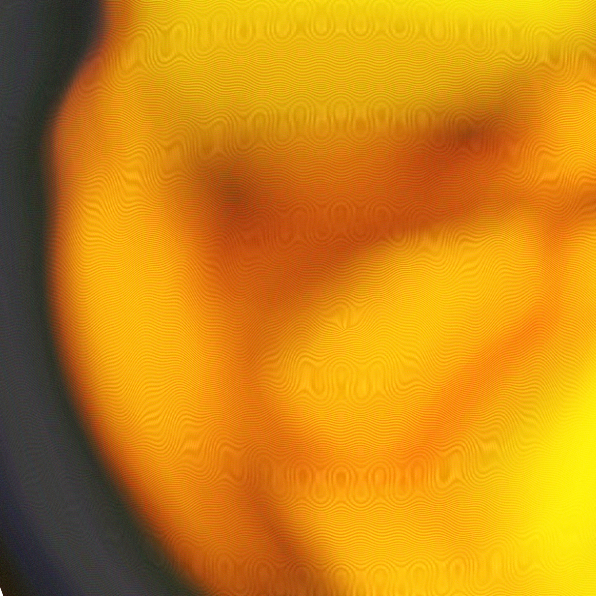

SKIP TO CONTENT
SECOND SOURCE
RELEASES
MERCH
SOURCES
BANDCAMP
FLOWER

MOTION ON
FULLSCREEN
INFO
RETURN
RESET
SOURCE 01 / INK
FLOWER
CLOSE
A fluid study made from a flower photograph.
Click around.
PROJECT
SECOND SOURCE AUDIO
Music, images and audiovisual experiments.
BANDCAMP ↗
CONTROLS
Drag to move the image · Hold to stir
Space or Enter for a vortex
Hold right-click or RETURN to settle
Reset to restore the original image
Escape to leave fullscreen
KEYBOARD
F — Fullscreen
KEYBOARD SHORTCUTS / ON